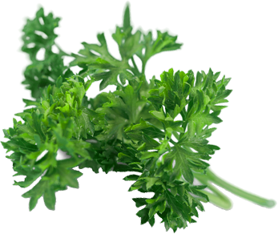
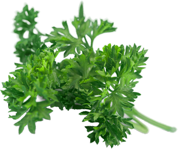
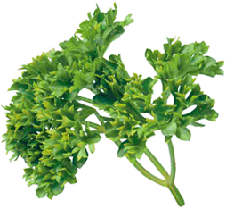
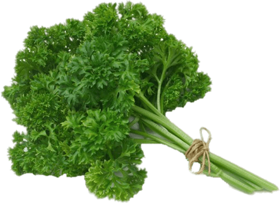
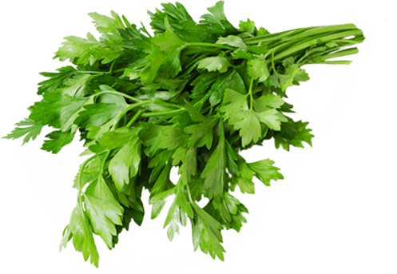

Parsley

Parsley
Apiales (미나리목)
Petroselinum crispum


 Click this!
허브11~3월 수확두해살이풀공영식물
Click this!
허브11~3월 수확두해살이풀공영식물
| Calories | 36 kcal | Carbs | 6.33 grams | |
| Fiber | 3.3 grams | Sugar | 0.85 grams | |
| Protein | 2.97 grams | Fat | 0.79 grams |
파슬리는 미나리목 미나리과에 속하는 식물입니다. 파슬리는 노란빛을 띤 녹색의 꽃이 산형꽃차례(꽃대의 끝에서 많은 꽃이 방사형으로 나와서 끝마디에 꽃이 하나씩 붙는 것.)로 자랍니다. 따뜻한 곳에서는 3월 중순에 씨를 뿌려 키우고, 6월에 옮겨 심은 후, 11월에서 3월에 수확합니다. 길이 2~3mm 정도 난형의 열매가 자라고, '향근, 법국향채(法國香菜), 하란근(荷蘭芹)' 등으로 불립니다. 유럽남동부, 아프리카북부 원산으로, 현재는 유럽, 미국, 동아시아에서는 일본에서 많이 재배되고 있습니다.
 파슬리에는 크게 두 종이 있는데, 이탈리아, 프랑스, 그리스, 터키 등 남유럽에서 주로 사용하는 넓게 퍼진 잎과 강한 향이 특징인 이탈리안 파슬리(P. crispum var. neapolitanum) 와 국내에서 우리가 많이 사용하는 잎이 곱슬곱슬한 컬리 파슬리(P. crispum var. crispum) 가 있습니다. 컬리 파슬리는 요리의 장식용으로 자주 사용합니다. 하지만 장식 효과를 빼면, 이탈리아 파슬리의 향이 더 강하기 때문에 컬리 파슬리는 덜 쓰이는 추세입니다.
이외에 잘 알려지지 않은 종으로 함부르크 파슬리(P. crispum var. tuberosum) 가 있습니다. 이는 당근모양의 뿌리가 있는 파슬리이고, '루트파슬리'라고도 불립니다. 주로 동유럽, 아시아 등 농업 집약 국가에서 스튜, 스프, 고기 요리 등에 많이 사용됩니다.
 3식물들과 파슬리를 함께 키워보세요!파슬리는 공영식물로 알려져 있습니다. 공영식물은 함께 키우기 이로운, 한 쪽 식물이 다른 쪽 식물의 생장을 돕는 식물을 말합니다. 동물로 보면 공생관계와 비슷한 것이라고 볼 수 있죠. 파슬리에서 나는 특유의 향이 벌레가 모이는 것을 막아주고, 다른 식물과 함께 심게 되면 주변 식물들의 성장을 촉진시켜준다고 합니다. 특히 파슬리는 다른 미나리과 식물들과 마찬가지로 토마토와 궁합이 좋답니다. 토마토를 기생충으로부터 보호하는 역할을 톡톡히 한다고 하네요! 두 작물을 함께 키워보는 것은 어떤가요?
About vegetables
the facts about vegetables that we didn't know-!!!
20232504 서예린
yerino9o9seo@gmail.com